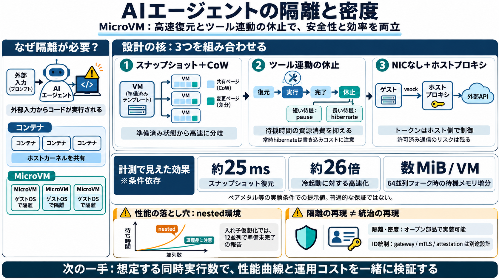

Google Agent Compute Engine: 1 microVM Per Agent [2026]
The honest guidance for buyers is to pick by threat model. Teams running untrusted code from many outside users will lea…

エージェント用マイクロVM（Agent Compute Engine型）の設計要点を、スナップショット復元とツール呼び出し連動の コスト/レイテンシ測定で読み解きます。
エージェントは外部指示（プロンプト）でコードを動かし得て、悪意ある入力が混ざる前提で隔離が重要です。 従来のコンテナはホストOSカーネルを共有し、攻撃面が残りやすいです。
スナップショットの“戻り”を速くし、ツール実行の合間は“休ませる”ことで、 VM級の隔離をコンテナ級の密度へ寄せるのが狙いです。
Googleの設計思想の多くは、Firecracker等のオープン部品で実装可能だと結論づけています。 特に「スナップショット・フォーク」と「ツール呼び出しライフサイクルに連動したチェックポイント」が核です。
ベアメタルでは、冷ブートに対してスナップショット復元が約25ms程度で、冷起動の約26倍速い結果です。 復元は“必要ページまで遅延”する再マッピングでコピー/初期化を先送りします。
アイドル状態で64並列フォークを回しても、ホストメモリ増分は1VMあたりおよそ数MiB規模と示されています。 休止/復帰を“ツール待ち”に合わせると、待機資源をゼロに近づけられます。
VM基盤がCPUグラフ等で推定するのに対し、エージェント基盤はツール呼び出し開始/終了を直接観測して “動作していない時間”を切り出します。
NICがあるとIPスタックやDNS、メタデータサーバ等の経路が増えます。 NICなしなら通信はvsock→ホスト側プロキシに実質限定し、認可トークン注入もホストで制御できます。
隔離性能の仕組みは真似できても、本番アーキテクチャの「ID統制」は別途コストがかかる、という含意があります。 遠隔gateway、mTLS、改ざん困難なアテステーション（SPIFFE等）を含むガバナンスは筆者実験では再現できていません。
Mac mini上で入れ子仮想化（nested virtualization）を使うと並列スケーリングが崩壊し、 12並列で“準備完了しない”事象が起きたと報告されています。
実装移植を考えるなら、「スナップショット・フォーク」「ツール完了でのチェックポイント」「NICなし＋ホストプロキシ」 の3点を先に押さえると、隔離と密度の両方に直結します。
本稿の強みは「抽象論」ではなく、実装と計測で設計要点（復元・休止・資格情報経路・並列フォーク）を分解して示した点です。 ただし数値は普遍約束ではなく、nested環境やワークロード条件で再検証が必要です。
The honest guidance for buyers is to pick by threat model. Teams running untrusted code from many outside users will lea…
Traditional VMs provide good isolation, but starting, pausing, and resuming them takes seconds to minutes. Containers ar…
Sandboxes run inside microVM-backed containers using Kata Containers, Firecracker, or gVisor, giving each workload its o…
AI infrastructure # Introducing Agent Compute Engine and expanded agent governance October 22, 2026 ##### The Google …
Runtime microVMs and runtime instances are complementary compute options that you can use independently or together thro…